The transformer,is the standard architecture behind today’s large language models (LLMs). Transformers have completely changed the way we do speech and language processing, and every chapter that follows will build on this idea.
What is a Transformer?
A transformer is a neural network with a special structure that uses self-attention (or multi-head attention).
Attention is a way for the model to decide which other words (tokens) are important when figuring out the meaning of the current word.
This allows the model to capture relationships between tokens even when they are far apart in the sentence.
Transformer Architecture
The figure below shows the main components of the transformer:
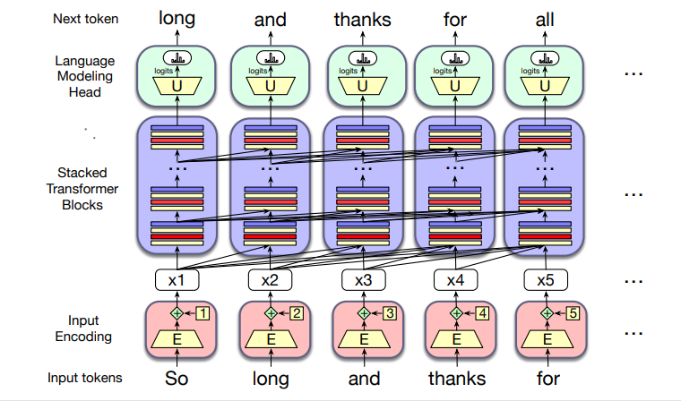
The transformer has three main parts:
1. Input Encoding
Each input token (like the word thanks) is turned into a vector using an embedding matrix (E).
The model also adds position information, so it knows the order of tokens.
2. Transformer Blocks (the core of the model)
These are stacked in columns, often 12–96 layers deep.
Each block contains:
Multi-head attention (looks at other tokens for context)
Feedforward networks (process the information further)
Layer normalization (keeps training stable)
Together, the blocks transform the sequence of input vectors (x1, …, xn) into output vectors (h1, …, hn).
3. Language Modeling Head
After the last block, the model produces predictions.
Each final vector is passed through an unembedding matrix (U) and a softmax function to choose the most likely next token.
Summary
In short: a transformer is a neural network that predicts tokens one by one. It works by first turning tokens into vectors, then processing them through stacks of attention-based layers, and finally predicting the next token using a softmax output head.
B. Attention
In older models like word2vec, each word always had one fixed meaning.
For example:
The word “chicken” always had the same vector, no matter if we meant the animal or the food.
The word “it” always had the same vector, even though in different sentences it can mean different things.
But in real life, the meaning of a word depends on context (the other words around it).
That’s what transformers + attention solve.
🐔 Example 1: "it" with different meanings
The chicken didn’t cross the road because it was too tired. → Here, it = chicken.
The chicken didn’t cross the road because it was too wide. → Here, it = road.
👉 The word “it” changes its meaning depending on what came before.
Transformers figure this out using attention: they look at all the words in the sentence and decide which ones are important for understanding “it”.
Attention is the mechanism in the transformer that weighs and combines the
representations from appropriate other tokens in the context from layer k+1 to build
the representation for tokens in layer k.
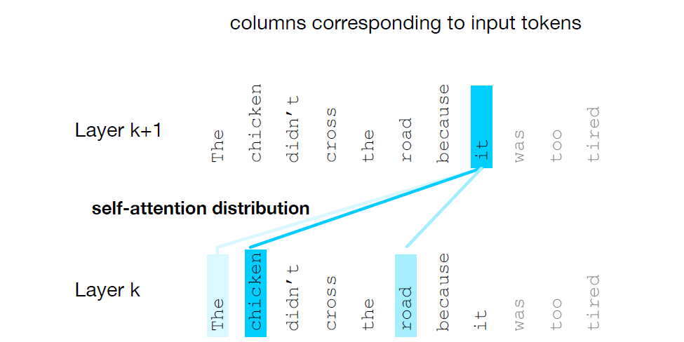
Attention diagram — "it" attends to earlier tokens
The diagram above shows how the token it (upper row) assigns attention to earlier tokens.
Thickness of the arrow indicates attention weight (stronger → thicker). Here chicken receives the
highest attention (0.60), road gets some attention (0.30), and other nearby tokens receive small weights.
⏳ Example 2: Reading step by step
When reading left to right:
The chicken didn’t cross the road because it...
At this moment, we don’t yet know if “it” refers to chicken or road.
So the model may pay attention to both until the next word (“tired” or “wide”) makes it clear.
🔑 Example 3: Grammar & Meaning
The keys to the cabinet are on the table.
Subject = keys (plural).
Verb = are (plural).
Attention helps the model connect keys with are, even though cabinet is closer.
I walked along the pond, and noticed one of the trees along the bank.
“bank” here means river bank, not financial bank.
The model knows this because of nearby words like pond and trees.
🎯 How Attention Works
At each layer of the transformer:
The model takes a word (say “it”)
Looks at all other words in the sentence
Assigns attention weights (higher = more important)
Builds a new contextual meaning for “it”
In the diagram, the word “it” attends strongly to chicken and road because these are the most likely references.
✅ In short:
Transformers don’t just see a word → they look at all other words to guess its meaning.
That’s why “it” can mean chicken in one case and road in another.
This is called self-attention: each word attends to others in the sentence.
What attention computes
“When I’m looking at the current word, which earlier words should I pay more attention to, and by how much?”
It does this by giving weights (importance values) to all the earlier words and then combining them into a new representation.
At a given layer of a transformer, attention builds a new vector representation for each token by selectively combining information from earlier tokens. For token position i, attention takes the current representation xi and a set of prior representations x1, …, xi and produces a new vector ai that summarizes the context most relevant to xi.
In causal (left-to-right) language models the context for position i is the tokens up to and including position i (no future tokens). Attention is computed independently at every position, so a self-attention layer maps the full input sequence (x₁,…,xₙ) to an output sequence (a₁,…,aₙ) of the same length.
Intuition
Attention answers the question: “Given the current token, which earlier tokens are most useful for understanding it?”
It does so by (1) scoring how similar each earlier token is to the current token, (2) turning those scores into normalized weights (probabilities), and (3) computing a weighted sum of the earlier token vectors using those weights.
Step-by-step — the simplified attention formula
Step 1 — inputs
We assume token vectors x₁, x₂, …, xₙ. For the current position i we will produce ai, the attention output for position i.
Step 2 — raw similarity scores (dot product)
For each earlier position j ≤ i compute a scalar score measuring similarity between xi and xj. The simplest choice is the dot product:
score(x_i, x_j) = x_i · x_j
Intuition: if two vectors point in similar directions, their dot product is large — that suggests the earlier token xj is relevant to xi.
Step 3 — normalize scores to weights (softmax)
Raw scores can be any real numbers. We convert them into a probability distribution over the earlier tokens so the values become interpretable as "how much to use each token". This is done with the softmax:
a_{ij} = softmax_j( score(x_i, x_j) ) for j ≤ i
The result aij is nonnegative and the weights for all j ≤ i sum to 1. Typically the weight on j = i (the token itself) is large, but other tokens may also receive substantial weight if they are similar to xi.
Step 4 — weighted sum
Use the weights to combine the earlier vectors into the attention output:
a_i = Σ_{j ≤ i} a_{ij} · x_j
In words: multiply each prior vector xj by its attention weight aij and add them up. The result ai is a new contextualized vector for position i.
Why these steps make sense
Dot product → similarity: vectors that are similar point in similar directions; the dot product is a direct measure of that.
Softmax → normalized importance: exponent + normalization produces positive weights that sum to one, so the model forms a convex combination (a weighted average) of prior vectors.
Weighted sum → contextual vector: the output ai is a blended vector that pulls information from the tokens that matter most for the current position.
In language, this lets a token's representation incorporate information from words that might be far away in the sentence: pronoun resolution, agreement (subject ↔ verb), and disambiguating word senses are all examples where attention helps.
Summary
Attention converts raw similarity scores between the current token and each prior token into a probability distribution (softmax), then builds a context-aware vector as the weighted sum of prior vectors. This simple mechanism—score, normalize, mix—repeats at every layer and every position, and is the key building block that lets transformers form rich contextualized token embeddings.
Attention — A Step-by-Step Example
Let’s carefully walk through how self-attention works inside a transformer.
We’ll use a short sentence: “The cat sat”.
Our focus will be on the token “sat” (x₃), and how the model builds its new
representation a₃ by looking back at earlier tokens (x₁ = “the”,
x₂ = “cat”, and itself).
This diagram shows one token (current xᵢ = sat) attending to earlier tokens x₁, x₂, x₃.
Raw dot-product scores (1.0, 3.0, 2.0) are normalized by softmax to weights (~0.09, 0.67, 0.24),
then the output aᵢ is the weighted sum of the earlier vectors.
Step 1 — Compare with earlier tokens
The current word “sat” (x₃) is compared with each token before it
(including itself). These comparisons are done using the
dot product. For our example, the similarity scores come out as:
x₃ with x₁ (“the”): 1.0 → weak similarity
x₃ with x₂ (“cat”): 3.0 → strong similarity
x₃ with x₃ (“sat”): 2.0 → medium similarity
Step 2 — Convert scores into probabilities
Raw scores can be large or negative, so we normalize them using the
softmax function. This turns the scores into probabilities
that always add up to 1:
softmax([1.0, 3.0, 2.0]) → [0.09, 0.67, 0.24]
Meaning: the word “sat” attends mostly to “cat” (67%), some to itself (24%),
and very little to “the” (9%).
Step 3 — Build the new representation
Finally, we compute the new output vector a₃ by taking a
weighted sum of all the inputs:
a₃ = 0.09·x₁ + 0.67·x₂ + 0.24·x₃
This means the new meaning of “sat” now strongly includes information about
“cat” (the subject), making it easier for the model to understand
who did the action.
✅ Key takeaway
Attention doesn’t just look at the current word in isolation. Instead, it asks:
“Which earlier words matter most for understanding this one?”.
The answer is encoded in the attention weights, and the new vector aᵢ
is built from a blend of those important words.
Understanding a Single Attention Head
The concept of attention lies at the very heart of the Transformer architecture. In this chapter, we will explore step by step how a single attention head works. Rather than thinking of it as an abstract equation, we will break it down into an intuitive process. Imagine that every word in a sentence has the ability to ask: “Whom should I pay attention to, and by how much?”
Step 1: Input Representation
We begin with an input embedding for each token in the sequence. If the model dimension is d, each token is represented as a vector:
xi ∈ ℝ1 × d
Here, xi is the embedding of the i-th word.
Step 2: Creating Queries, Keys, and Values
From each input vector, the model creates three different projections: a Query (Q), a Key (K), and a Value (V). These are obtained by multiplying the input with learned weight matrices:
qi = xi WQ,
ki = xi WK,
vi = xi WV
The role of these projections is to allow the same word to play different parts in the attention process: the query asks the question, the key provides the address to be matched, and the value carries the information to be retrieved.
Step 3: Matching Queries with Keys
Once we have queries and keys, we can measure how strongly a word should attend to others. This is done by taking the dot product between a query and a key, scaled by the dimension of the key vectors:
score(xi, xj) = (qi · kj) / √dk
If the dot product is large, the query and key are similar, which means the word xi should pay closer attention to xj.
Step 4: From Scores to Attention Weights
These raw scores are then normalized using the softmax function. This ensures that the attention weights form a probability distribution:
aij = softmax(score(xi, xj))
Attention is a key concept in modern deep learning architectures such as the Transformer.
At its core, the attention mechanism allows each token in a sequence to look at, or “attend to,”
other tokens in order to build a more context-aware representation.
Let us break down the process step by step. Suppose we have an input sequence of tokens.
Each token xi is first projected into three different spaces:
a Query (Q), a Key (K), and a Value (V). These are obtained through learned linear transformations.
The Query of the current token is compared with the Keys of all tokens. This comparison is done
by taking dot products, which produce similarity scores. These scores measure how much focus
should be given to each token relative to the current one.
The similarity scores are then normalized using the softmax function,
converting them into attention weights. These weights represent how strongly each token contributes
to the final representation of the current token.
Using these attention weights, we take a weighted sum of the Value vectors. This results in
a new vector representation for the current token — one that incorporates contextual information
from the entire sequence.
Finally, this output is passed through another learned linear transformation, represented
by WO, to bring it back into the same dimension as the input embeddings.
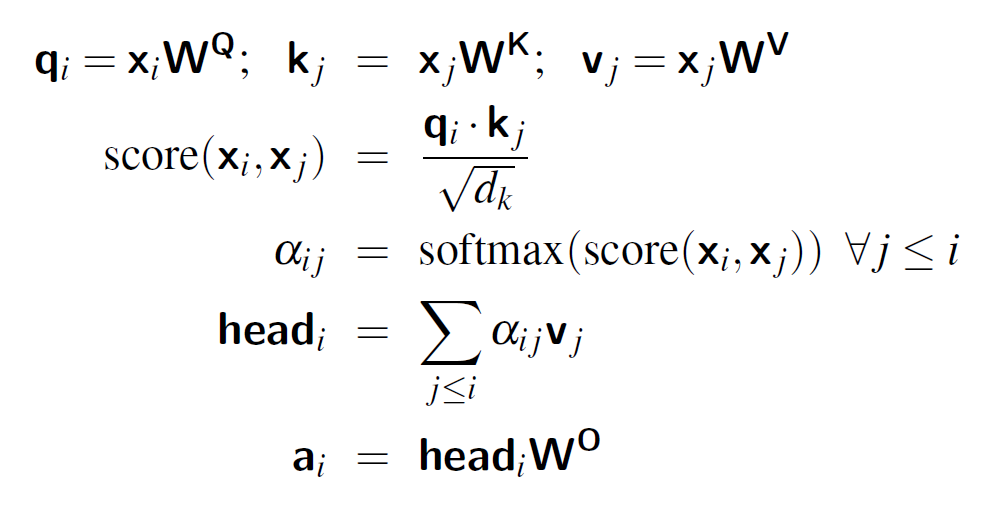
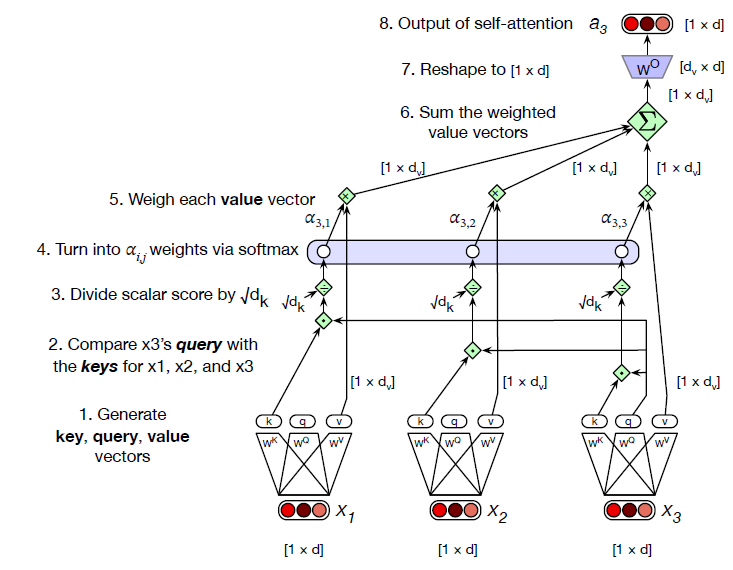
Summary — Single Attention Head
Each tokenxi creates three versions of itself: Query (Q), Key (K), and Value (V).
Compare: The query of the current token is compared with the keys of all tokens to produce similarity scores.
Normalize: The raw similarity scores are converted into attention weights using a softmax, so they form a probability distribution (weights sum to 1).
Mix: These attention weights are used to compute a weighted sum of the value vectors, producing a new contextual representation (the attended output).
Project back: The head output is reshaped back to the model dimension using the output matrix WO, so the final output has the same size as the original token vector.
In compact form: each xi → (Q,K,V) → scores via Q·K → softmax → weights → weighted sum of V → final projection with WO.
Multi-Head Attention
Intuition
Multi-head attention enriches the model’s representation by allowing it to examine
the context from several different perspectives simultaneously. While one head may
align strongly with semantically related words, another may emphasize positional
structure, and another may attend to rare but important connections. The combination
of all these heads, followed by a projection back to the model space, gives the
transformer both breadth and depth in capturing dependencies across a sequence.
A transformer does not rely on a single attention mechanism. Instead, it uses
multiple parallel attention heads within the same layer. The idea is
that each head can focus on a different aspect of the context. One head may capture
short-range dependencies, another may focus on long-distance relationships, while
yet another may specialize in syntactic or semantic cues. By combining these heads,
the model gains a richer and more flexible representation of the input sequence.
Head-Specific Projections
Each attention head has its own set of learnable parameters. Given an input vector
xᵢ at position i, the model projects it into separate
query, key, and value vectors for each head. For head
c, this is written as:
qᶜᵢ = xᵢ · W_Qᶜ
kᶜⱼ = xⱼ · W_Kᶜ
vᶜⱼ = xⱼ · W_Vᶜ
Here, W_Qᶜ, W_Kᶜ, and W_Vᶜ are parameter
matrices of dimensions d × d_k, d × d_k, and
d × d_v respectively. This means every head learns its own mapping from
the model dimension d into smaller subspaces of size d_k
and d_v.
Attention Within a Head
Once queries and keys are defined, the similarity between a query at position
i and a key at position j is measured using the dot
product. To stabilize gradients, this score is scaled by the square root of
d_k:
scoreᶜ(xᵢ, xⱼ) = (qᶜᵢ · kᶜⱼ) / √(d_k)
These scores are then normalized with a softmax across all context positions to
obtain attention weights:
aᶜ_{i j} = softmax(scoreᶜ(xᵢ, xⱼ))
Finally, the output of head c for position i is a weighted
sum of the value vectors:
headᶜᵢ = Σⱼ aᶜ_{i j} · vᶜⱼ
Combining Multiple Heads
Each head produces an output vector of size 1 × d_v. If there are
A heads, their results are concatenated to form a vector of size
1 × (A·d_v). This combined vector is then projected back into the model
dimension d using an additional matrix W_O:
aᵢ = ( head¹ᵢ ⊕ head²ᵢ ⊕ … ⊕ headᴬᵢ ) · W_O
Here, ⊕ denotes concatenation. The matrix W_O has dimensions
(A·d_v) × d, ensuring the final multi-head output for each position
returns to the expected model dimension.
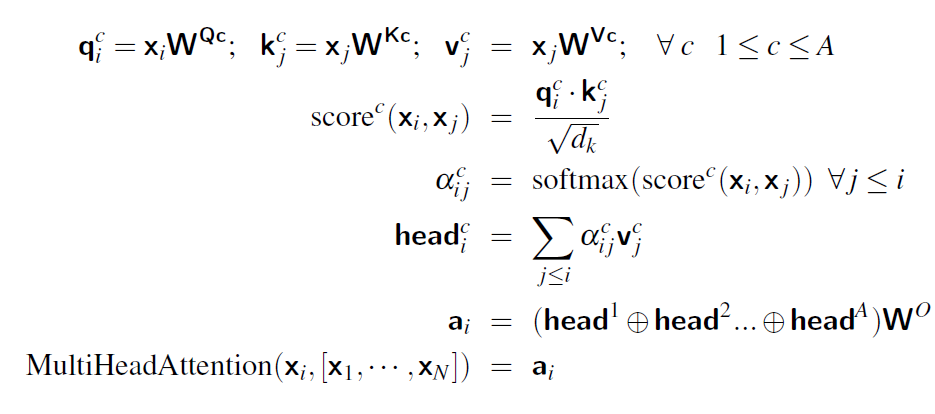
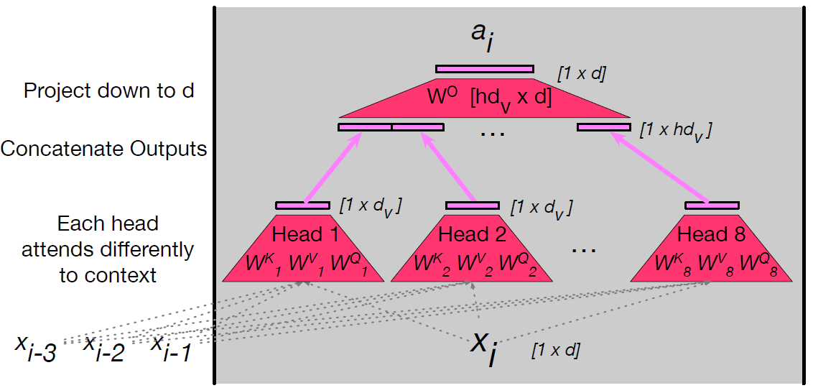
C. Transformer Block Overview
A transformer block is a modular unit used repeatedly in transformer models. Each block transforms the d-dimensional vector for one token in two main ways:
by letting the token attend to other tokens (self-attention),
and by applying a position-wise feedforward network (FFN) to each token.
Complementing these are residual connections and layer normalization, which stabilize training and preserve information.
1. Residual Stream
Imagine a vertical pipe carrying a vector for a single token upward through the transformer's layers. Each component reads the current vector in the pipe, computes an output, and adds that output back into the pipe. This "residual stream" view emphasizes that information accumulates rather than being overwritten.
Why residuals?
Residual (skip) connections help gradients flow backward during training and guarantee the input signal remains available at every stage. Practically, they prevent the network from forgetting the original token embedding as deeper transforms are applied.
The feedforward network is applied independently to each token. It does not mix information across positions — that is the job of attention. The FFN is identical across all positions but varies between layers (each layer has its own learned weights).
2.1 Mathematical form
The FFN for token xi is typically written as:
FFN(x_i) = ReLU(x_i W_1 + b_1) W_2 + b_2
Here, W_1 maps the d-dimensional token vector to a wider hidden dimension dff, and W_2 maps back to the original dimension d. Commonly, dff > d (for example, 2048 vs 512). The intermediate ReLU (or GELU) gives the network nonlinearity.
2.2 Intuition
The FFN expands the representation into a higher-dimensional space where complex features can be computed, then compresses it back into the model dimension. Think of it as a per-token "processor" that performs richer transformations on that token's information after it has gathered context from attention.
3. Layer Normalization (LayerNorm)
LayerNorm standardizes the components of a single token vector so they have zero mean and unit variance, with learnable scale and shift. It is applied twice in each transformer block: once before attention and once before the feedforward network.
The final formula is: LayerNorm(x) = γ · x̂ + β
This keeps the vector centered around 0 with unit variance, but also allows the network
to adjust the scale and shift using γ and β.
Note: LayerNorm operates across the features of a single token (the d components), not across tokens in a batch. This differs from BatchNorm, which normalizes across a batch dimension.
4. Full transformer block — step-by-step equations
Below is the canonical sequence of operations for a single token xi inside one transformer block:
- MultiHeadAttention(·) is the component that mixes information across tokens (every token's t1 vectors are available to the attention mechanism).
- The two additions (+ x_i and + t3_i) are residual connections that preserve earlier representations.
5. Where does cross-token information enter?
Only the attention mechanism reads other token streams. Attention pulls information from other residual streams (other token positions) and writes its result back into the current token's stream via the residual addition. FFN and LayerNorm act only on the local token vector.
Elhage et al. (residual movement)
In their analysis, attention heads can be viewed as literally moving pieces of information from one token's residual stream to another token's stream. This means the final vector at a position can contain subspaces encoding other tokens' content.
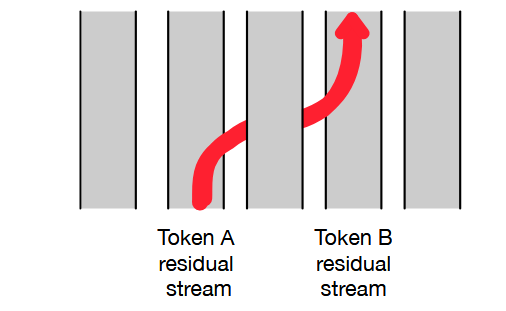
Figure: An attention head can move information from token A’s residual stream into
token B’s residual stream..
6. Stacking blocks — building deep models
Transformer models are created by stacking many identical blocks. Because each block's input and output dimensions match (both are d), stacking is straightforward. Typical layer counts:
Model
Typical layers
T5 / GPT-3 small
~12
GPT-3 large
~96
Modern LLMs (varies)
100s or more
At shallow layers, the residual stream mostly represents the current token. At deeper layers, the stream often encodes information useful for predicting the next token — this is a result of training objectives such as next-token prediction.
7. Practical notes and variations
Activation function: Many modern implementations use GELU instead of ReLU inside the FFN.
Pre-LN vs Post-LN: The textbook equations above represent pre-layer-norm (LayerNorm before attention/FFN). Some older descriptions use post-layer-norm (LayerNorm after each residual add). Pre-LN tends to be more stable in deep networks.
Normalization details: Implementations add a small epsilon to the denominator when dividing by \sigma to avoid numerical issues.
8. Summary
Each transformer block:
normalizes the token vector,
allows the token to gather context via multi-head attention,
adds that context back using a residual connection,
normalizes again,
applies a position-wise feedforward network (FFN),
and adds the FFN output back via another residual connection.
Stack many such blocks and you have the deep transformer architectures used for tasks in NLP, vision, and beyond.
9. Parallelizing Transformer Computations with Matrices
So far, we have described the transformer block as if it were computing the output for
one token at a time. For example, in self-attention, we showed how a single
token vector \(x_i\) produces a query, key, and value, and how these interact with other tokens.
But in reality, transformers do not process tokens one by one. Instead, they make use of
parallel computation, which allows them to handle all tokens at once.
This parallelism is one of the main reasons transformers are so efficient and scalable.
1. Representing the Input as a Matrix
Imagine we have an input sequence with \(N\) tokens. Each token is represented by an embedding
vector of dimension \(d\). Instead of treating each token separately, we can stack all token
vectors into a single matrix:
\[
X \in \mathbb{R}^{N \times d}
\]
Here:
\(N\) = sequence length (number of tokens).
\(d\) = embedding dimension (e.g., 512 or 1024 in practice).
Each row of \(X\) corresponds to one token's embedding.
For example, if we have a sentence with 4 tokens and embeddings of size 3, our matrix looks like:
But in parallel, we can compute all scores at once using:
\[
QK^\top \in \mathbb{R}^{N \times N}
\]
This gives us a full attention score matrix, where entry \((i, j)\) is the similarity between
token \(i\)'s query and token \(j\)'s key.
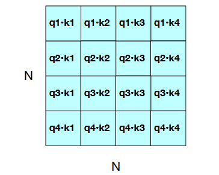
Figure: The N × N QKᵀ matrix showing how it computes all qi · k j comparisons in a
single matrix multiple.
4. Masking Future Tokens
In language modeling, a token must not look at tokens that come after it. Otherwise, predicting
the next word would be trivial. To prevent this, we use a mask.
The mask \(M\) is defined as:
\(M_{ij} = 0\) if \(j \leq i\) (allowed).
\(M_{ij} = -\infty\) if \(j > i\) (disallowed).
The masked score matrix becomes:
\[
\text{MaskedScores} = \frac{QK^\top}{\sqrt{d_k}} + M
\]
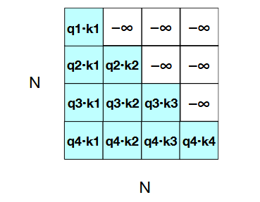
Figure: The N × N QKᵀ matrix showing the qi · k j values, with the upper-triangle por-
tion of the comparisons matrix zeroed out (set to −∞, which the softmax will turn to zero).
After applying the softmax function, the forbidden positions become 0.
5. Producing the Weighted Sum
Once we have normalized attention weights, we compute the output for each token by taking
a weighted sum of the value vectors:
This gives us an output of shape \([N \times d_v]\), where each row is the updated representation
of a token.
6. Multi-Head Attention
A single head may not be sufficient to capture all relationships. That’s why transformers
use multi-head attention. Each head has its own projection matrices
\(W_{Q_i}, W_{K_i}, W_{V_i}\), and computes its own head:
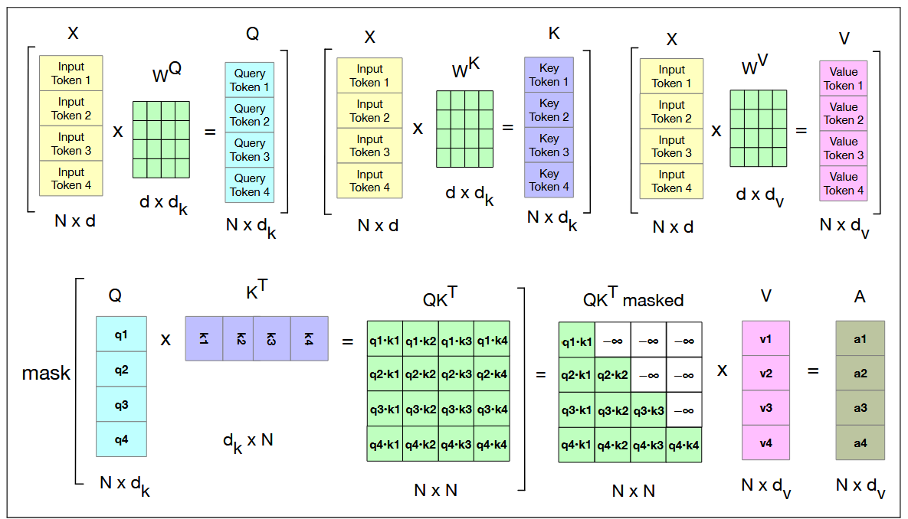
Figure: Schematic of the attention computation for a single attention head in parallel. The first row shows
the computation of the Q, K, and V matrices. The second row shows the computation of QKT, the masking
(the softmax computation and the normalizing by dimensionality are not shown) and then the weighted sum of
the value vectors to get the final attention vectors.
7. Adding Feedforward and Residual Connections
After attention, the transformer block applies:
Residual connection: Add the original input back.
Layer normalization: Normalize the result.
Feedforward network: Process each token independently.
In matrix form:
\[
O = X + \text{MultiHeadAttention}(\text{LayerNorm}(X))
\]
\[
H = O + \text{FFN}(\text{LayerNorm}(O))
\]
The key point: both the input \(X\) and the output \(H\) have shape \([N \times d]\). This
makes it possible to stack many transformer blocks one after another.
8. Why Parallelization Matters
By parallelizing computations:
Efficiency: We avoid loops over tokens and instead rely on matrix multiplication,
which GPUs and TPUs can perform extremely fast.
Scalability: Transformers can handle thousands of tokens in a single pass.
Quadratic cost: Computing \(QK^\top\) requires \(O(N^2)\) operations. This becomes
expensive for very long inputs, which is why researchers design special architectures for
long-context transformers.
In short: transformers achieve their power not just from the attention mechanism, but also from
the clever use of parallel computation via matrix operations.
D. The Language Modeling Head in Transformers
1. Introduction
Transformers by themselves are general-purpose sequence models: they take a sequence of token embeddings,
pass them through stacked layers of self-attention and feedforward networks, and produce contextualized hidden
representations for each token. These hidden states capture rich information about both the input token and its
surrounding context.
However, the Transformer backbone does not inherently know how to predict words. To use Transformers for
language modeling—that is, assigning probabilities to sequences of words—we need an additional component on
top of the backbone: the language modeling head.
This head converts the final hidden representation of each token into a probability distribution over the
vocabulary, enabling the model to predict the next token, fill in masked tokens, or generate text.
2. Language Models as Word Predictors
Language models are fundamentally word predictors. Given a sequence of words, they estimate the probability of the next word. For example, given the context:
P(fish | Thanks for all the)
A language model computes a conditional probability distribution over all possible next words. Earlier approaches such as n-gram models used counts of word
occurrences within a fixed context of size n − 1. With transformers, however, the context is defined by the attention window, which can be very large
(e.g., 32K tokens, or even millions with long-context architectures).
3. Architecture of the Language Modeling Head
The goal of the language modeling head is to take the hidden state output from the final transformer layer and transform it into a probability distribution
over the vocabulary.
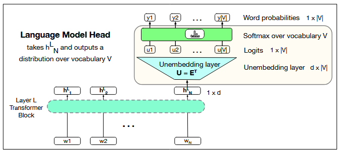
Figure: The language modeling head: the circuit at the top of a transformer that maps from the output
embedding for token N from the last transformer layer (hLN ) to a probability distribution over words in the
vocabulary V ..
3.1 Input Representation
Let hLN ∈ ℝd
denote the hidden state vector for the last token at position N from the final transformer block L. This vector encodes the context up to position N.
3.2 Linear Projection
The first step is to map this hidden state into a logit vector of vocabulary size |V|. This is done with a linear transformation:
u = hLN WT + b
Here:
W ∈ ℝ|V| × d is the projection weight matrix,
b ∈ ℝ|V| is the bias vector,
u ∈ ℝ|V| is the logit vector, containing one score per token.
3.3 Weight Tying and the Unembedding Layer
Instead of learning a new projection matrix, modern models often use weight tying. The same embedding matrix E that maps input tokens
to embeddings is reused (via transposition) to map hidden states back to vocabulary space. That is:
E ∈ ℝ|V| × d is the embedding matrix,
ET ∈ ℝd × |V| serves as the unembedding layer.
Thus the logits are computed as:
u = hLN ET
This design reduces parameters and ensures that embeddings are optimized both for input and output mappings.
3.4 Softmax to Probabilities
The logits are converted into probabilities over the vocabulary using the softmax function:
y = softmax(u)
where y is a probability distribution of size |V|.
4. Applications of the LM Head
4.1 Sequence Probability
The probability distribution can be used to compute the likelihood of entire sequences, which is useful in tasks like perplexity evaluation.
4.2 Text Generation
For generation, we sample tokens from y. Options include:
Greedy decoding: choose the highest probability word.
Sampling: draw tokens stochastically, possibly with techniques like temperature scaling, top-k, or nucleus sampling.
The chosen token is then fed back as input to predict subsequent tokens.
5. The Logit Lens
The logit lens (Nostalgebraist, 2020) is a diagnostic tool for interpretability. By applying the unembedding matrix ET to hidden states at intermediate
layers (not just the final layer), we can observe approximate distributions over the vocabulary. Although these internal states were not explicitly trained
to represent predictions, the logit lens offers valuable insights into how information evolves across layers.
6. Decoder-Only Transformers
Causal language models like GPT are often called decoder-only transformers. This terminology reflects that they use only the decoder half of the original
encoder–decoder transformer architecture. In this setup:
Masked self-attention ensures tokens cannot attend to future positions.
The LM head produces the next-token distribution at each step.
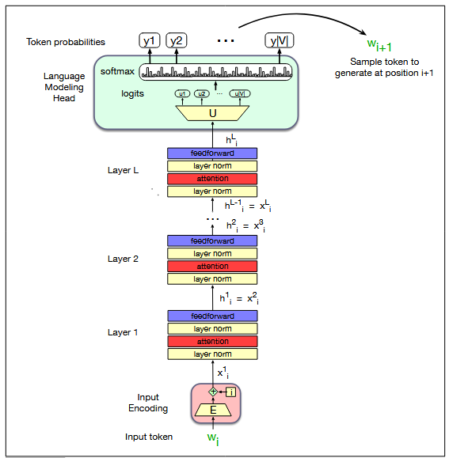
Figure: A transformer language model (decoder-only), stacking transformer blocks
and mapping from an input token wi to to a predicted next token wi+1.
7. Summary
The language modeling head is the component that transforms abstract hidden
representations into concrete predictions over words. Its steps are:
Take the hidden state hLN from the final transformer layer.
Project it into vocabulary space using a linear transformation (often tied to embeddings).
Apply softmax to obtain probabilities y.
Use these probabilities for evaluation or generation.
Together with the transformer backbone, the language modeling head enables powerful generative models that define the state of the art in natural language processing.